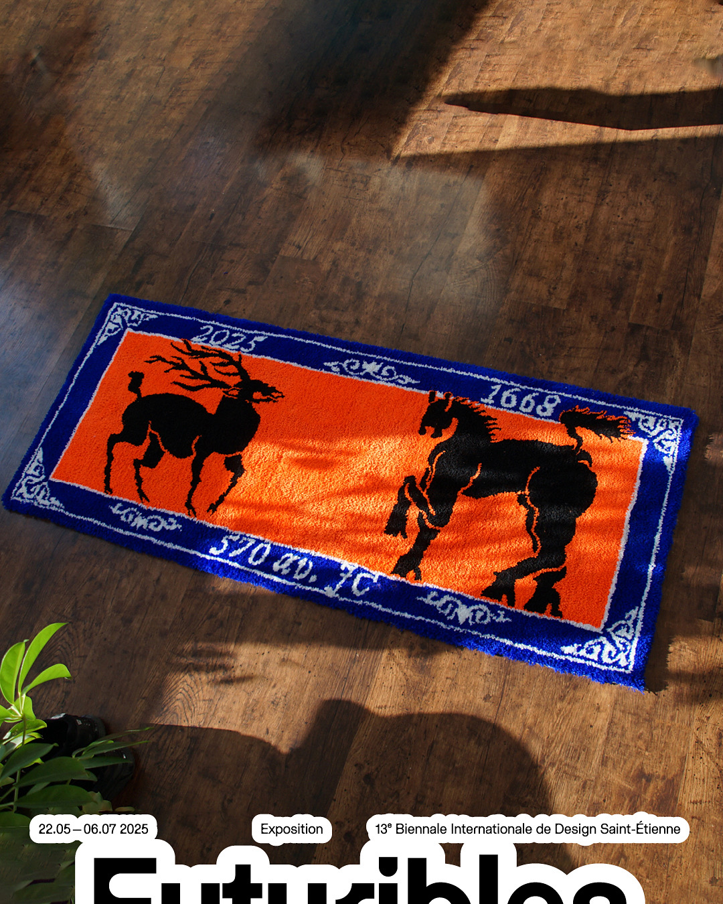
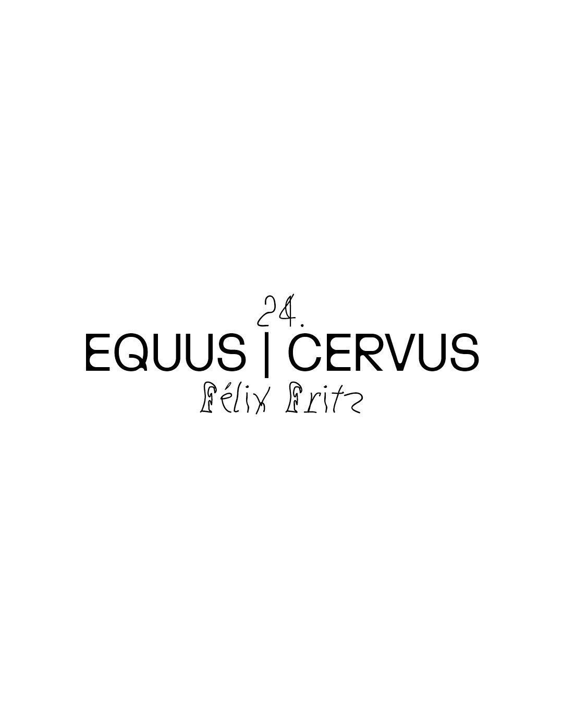
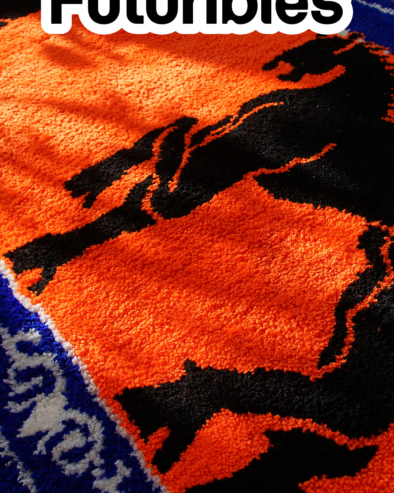
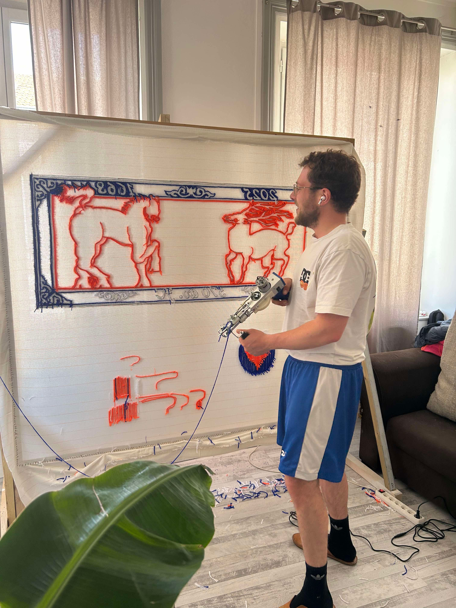

EQUUS | CERVUS
2025
1540×660mm
laine acrylique
Tapisserie murale réalisée au "tufting-gun" pour l'exposition Futuribles présentée par ppdesigner dans le cadre de la 13e Biennale Internationale Design de Saint-Étienne.
Illustration inspirée de la fable grecque "le Cheval et le Cerf" de Stésichore en 570 av. JC, puis reprise par Jean de La Fontaine en 1668 comme "Le cheval s'étant voulu venger du cerf", puis réinterprétée en tapisserie.
→ Exposition Futuribles




Stésichore, 570 av. J-C
Un Cheval possédait seul un pré. Ayant vu un Cerf y entrer et y l’aire, des débats, il voulut se venger et alla trouver l’homme il lui demanda s’il pourrait, avec son secours, punir le Cerf. « Oui, répliqua l’homme, si tu me laisses te mettre un frein et monter sur ton dos. » Le Cheval y consentit; mais, au lieu de tirer vengeance du Cerf, il devint l’esclave de l’homme. De même, dit Stésichore, prenez garde qu’en voulant, vous aussi, tirer vengeance de vos ennemis, vous n’éprouviez le sort du Cheval : vous avez déjà reçu le frein, puisque vous avez choisi un général avec un pouvoir absolu ; si vous donnez une garde à Phalaris et que vous le laissiez monter sur votre dos, vous deviendrez ses sujets.
Jean de La Fontaine, 1668
De tout temps les Chevaux ne sont nés pour les hommes.
Lorsque le genre humain de gland se contentait,
Âne, Cheval, et Mule, aux forêts habitait ;
Et l’on ne voyait point, comme au siècle où nous sommes,
Tant de selles et tant de bâts,
Tant de harnois pour les combats,
Tant de chaises, tant de carrosses,
Comme aussi ne voyait-on pas
Tant de festins et tant de noces.
Or un heval eut alors différent
Avec un Cerf plein de vitesse,
Et ne pouvant l’attraper en courant,
Il eut recours à l’Homme, implora son adresse.
L’Homme lui mit un frein, lui sauta sur le dos,
Ne lui donna point de repos
Que le Cerf ne fût pris, et n’y laissât la vie ;
Et cela fait, le Cheval remercie
L’Homme son bienfaiteur, disant : Je suis à vous ;
Adieu. Je m’en retourne en mon séjour sauvage.
– Non pas cela, dit l’Homme il fait meilleur chez nous :
Je vois trop quel est votre usage.
Demeurez donc vous serez bien traité.
Et jusqu’au ventre en la litière.
Hélas ! que sert la bonne chère
Quand on n’a pas la liberté ?
Le Cheval s’aperçut qu’il avait fait folie ;
Mais il n’était plus temps : déjà son écurie
Était prête et toute bâtie.
Il y mourut en traînant son lien.
Sage s’il eût remis une légère offense.
Quel que soit le plaisir que cause la vengeance,
C’est l’acheter trop cher, que l’acheter d’un bien
Sans qui les autres ne sont rien.